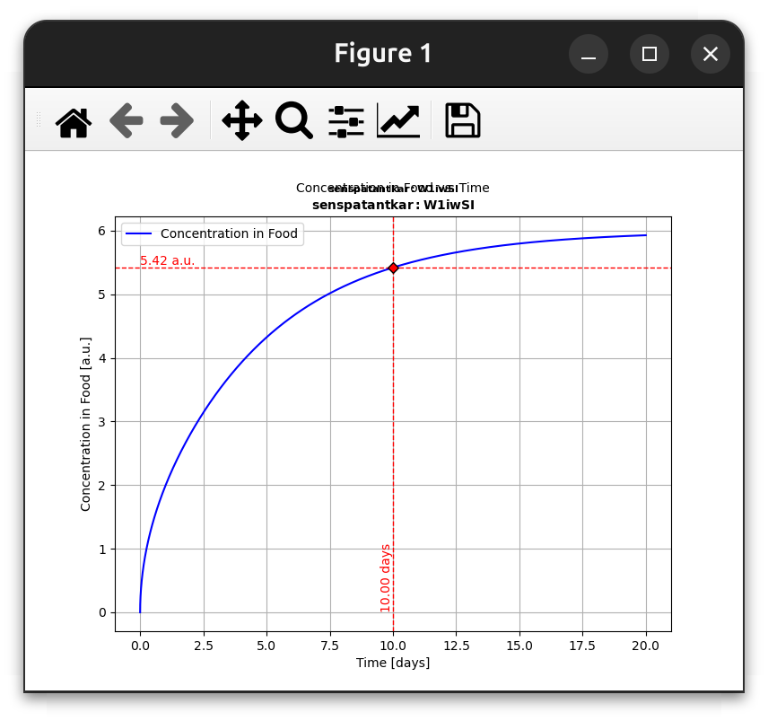
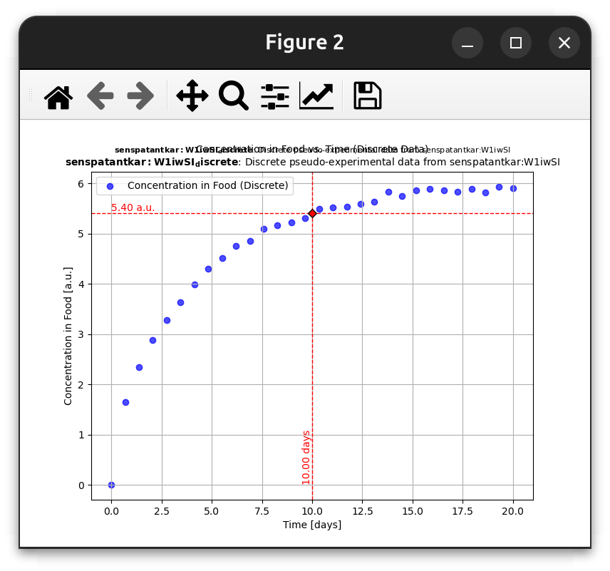
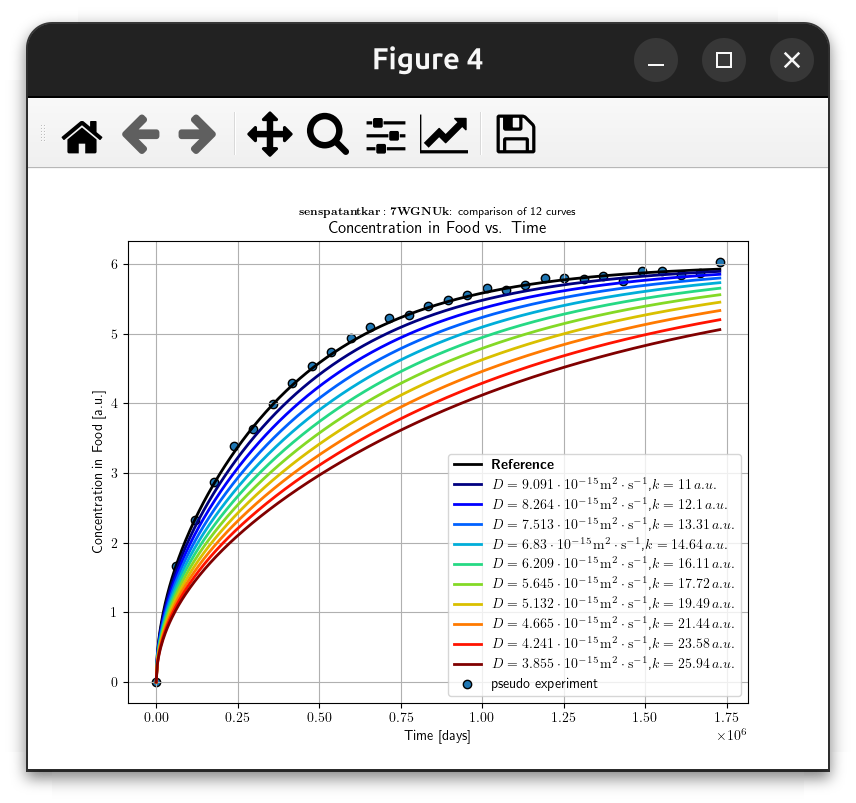
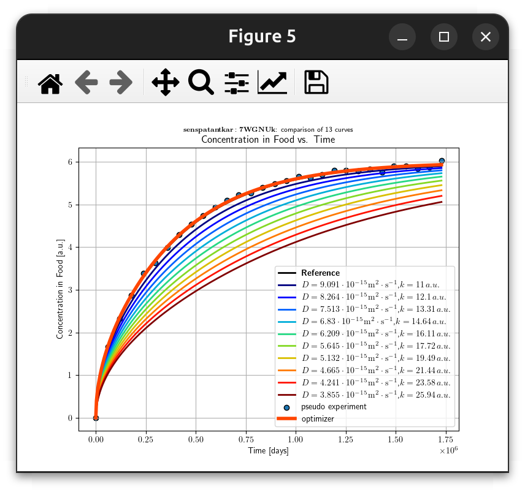

This example illustrates how the diffusion coefficient (D) and partition coefficient (k) can be estimated from concentration kinetics in food simulants. 🧪
📌 Example 4: Estimating layerLink Objects🚀 Running the Initial Migration Simulation🎭 Generating Pseudo-Experimental Data📏 Evaluating the Distance Function🎯 Sensitivity Analysis📌 Adding Pseudo-Experiment to Comparison🎯 Fitting D and k to Recover Original Values📊 Final Comparison Plot
The concept of free parameters is enforced by creating layerLink objects for specific layers and properties. layerLink enables modifying simulations with minimal code changes, making it ideal for sensitivity analysis. 📊
The showcase describes the desorption from a monolayer material (P) into a food simulant (F). By fixing an arbitrary k = 1 for the food simulant (i.e., kF), we can consider k in the material (kP) as the partition coefficient between F and P:
Since:
Where
The layerLink mechanism also provides the flexibility to optimize D and k in arbitrary layers, enabling forensic exploration of migration processes. 🔍
Define a monolayer material (P) and a food layer (F) with numerical data.
If a substance is inserted, all properties not defined by links are automatically calculated. 🤖
Define and attach layerLink** objects** to an existing simulation.
Run a migration simulation using:
xxxxxxxxxxR = F.migration(P) # Or alternatively: R = P.migration(F)Create a pseudo-experiment dataset using:
xxxxxxxxxxE = R.pseudoexperiment()You can also provide your own data. 📝
Compute a distance function:
xxxxxxxxxxd2 = R - E # Squared distance function between R and EPerform sensitivity analysis by changing the layerLink values of D and k. 🎯
Rerun simulations with updated parameters:
xxxxxxxxxxR.rerun()Compare different scenarios using:
xxxxxxxxxxR.comparison.plotCF()Fit D** and k simultaneously** to recover original values:
xxxxxxxxxxR.fit(E) # Fits R against experimental E valuesMeasure fit quality and assess the risk of overfitting. 🚦
xxxxxxxxxxfrom patankar.layer import layer, layerLinkfrom patankar.food import foodlayerxxxxxxxxxxP = layer(l=(100, "um"), D=(1e-10, "cm**2/s"), # note that non SI units will be converted automatically C0=1000, k=10)xxxxxxxxxxF = foodlayer(contacttime=(10, "days"), volume=(1, "L"), surfacearea=(6, "dm**2"), # remember **2 means ^2 in Python (do not use ^) h=(1e-6, "m/s"), CF0=0, k=1)layerLink Objectsx
Dreference, kreference = P.D, P.kD = layerLink("D", indices=0, values=Dreference) # D links P.D[0] with 0 = layer 1k = layerLink("k", indices=0, values=kreference) # k links P.k[0]P.Dlink = D # we attach the Dlink to PP.klink = k # we attach the klink to Px
R = F.migration(P) # R = P.migration(F) works also, R = P >> F is another optionR.plotCF()
x
E = R.pseudoexperiment(npoints=30, std_relative=0.01) # +/- 2% errorsE.plotCF()
xxxxxxxxxxd2 = R - E # "minus" means sum of squared errors (in this context)print(f"Initial squared distance (E - R)**2: {d2()}")xxxxxxxxxxniterations = 10 # number of iterations for the sensitivty analysiscmap = R.comparison.jet(niterations)
for i in range(1, niterations + 1): D[0] /= 1.1 # Decrease D by 10% k[0] *= 1.1 # Increase k by 10% name = f"{P.Dlatex()[0]},{P.klatex()[0]}" R.rerun(name=name, color=cmap[i-1]) print(f"[{i}/{niterations}]: Distance variation = {100 * d2() / d2_original - 100}%")R.comparison.add(E, label='pseudo experiment', discrete=True)R.comparison.plotCF()
D and k to Recover Original Valuesxxxxxxxxxxd2beforeOptim = d2()resfit = R.fit(E) # fitting is performed using the Nelder and Mead simplex methodd2afterOptim = d2()
print(f"BEFORE OPTIMIZATION: (E - R)**2 = {d2beforeOptim}")print(f"AFTER OPTIMIZATION: (E - R)**2 = {d2afterOptim}")print(f"Variation from original = {100 * d2afterOptim / d2_original - 100:.4g}%")
print(f'Dfitted = {D.values} [m²/s] vs. Doriginal = {Dreference} [m²/s]')print(f'kfitted = {k.values} [a.u.] vs. koriginal = {kreference} [a.u.]')xxxxxxxxxxR.comparison.plotCF()
By following these steps, you can analyze how diffusion and partition coefficients impact migration behavior in food simulants and optimize these parameters for forensic or predictive modeling. 🔍📈